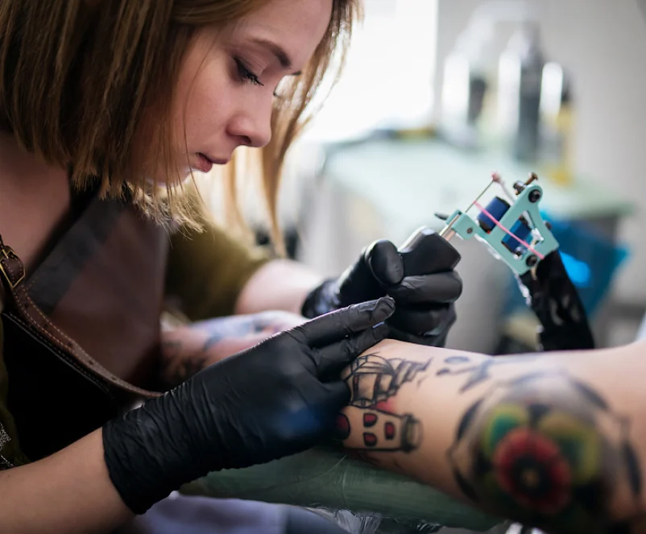

Обо мне

Профессиональный
ТАТУ - МАСТЕР
У татуировок есть своя сила и магия. Они украшают тело, но они также укрепляют душу.
Функциональные татуировки используются в основном не для эстетических целей. Одно из таких применений - татуировка пациентов с болезнью Альцгеймера с их именем, чтобы их можно было легко идентифицировать, если они пропали без вести.
Перманентный макияж улучшает черты лица - брови, глаза и губы становятся четкими с помощью цветов.
Профессиональный
ТАТУ - МАСТЕР
Татуировка в Москве очень популярна и актуальна. Я выполняю её с применением специального стерильного оборудования и это гарантирует безопасность проведения данной процедуры. В основном я занимаюсь нанесением татуировки, обновлением, коррекцией или перекрытием. Но это не все мои услуги, с полным перечнем Вы можете ознакомиться кликнув по кнопке ниже.
Описание перм. макияжа
Контакты
Тату - мастер: Юлия
Что - бы записаться ко мне вам нужно написать по одному из представленных ниже контактов.
г. Москва, ул. Ленина, 22Б
(097) 599 43 67
Время работы: пн - пт, с 09:00 по 17:00
© 2021 yadtatto | Дизайн & Разработка by Exodus`